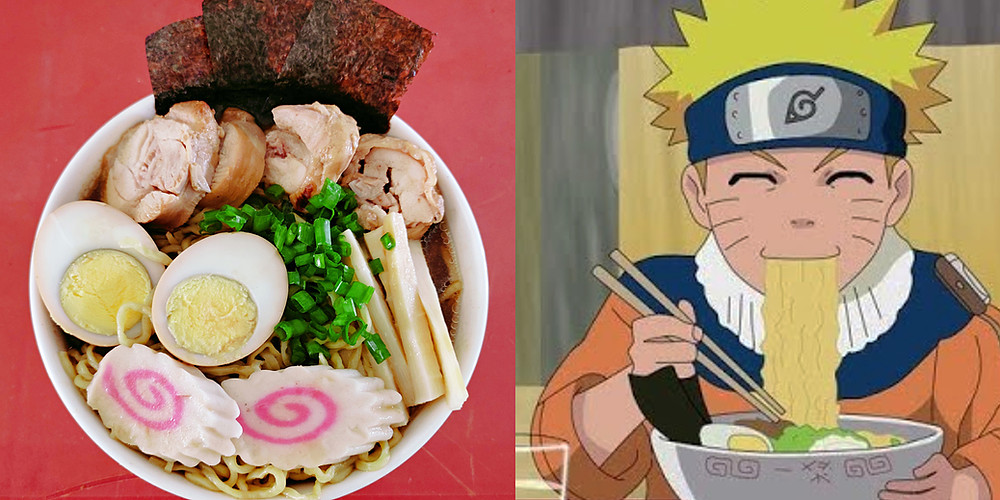

Ichiraku Ramen

Ramen is the Best Pleasure
Learn to make the Naruto's go-to ramen from his favorite restaurant!
Ingredients
- 4 cups of Cooked Ramen
- 5 cups of your favorite Meat Broth
- Pork Tenderloin Cutlet
- 2 Eggs
- 1 Baby Bok Choy
- 1 cup of Scallions
- .5 cups of Soy Sauce
Steps
- Preheat your stove to 450 degrees.
- Cook the pork cutlet for 10-15 minutes.
- Boil your eggs for 10 minutes in a separate pot of water. Place in cold water when done.
- Pour your broth into a pot and let it simmer. Add in soy sauce.
- When the broth is beginning to boil, add in the ramen noodles.
- To prepare the toppings, peel the eggs and slice in half. Cut the tenderloin, boy choy, and scallions into slices
- When the noodles are finished cooking, pour the broth and noodles into a bowl.
- Place your toppings over the noodles and enjoy!